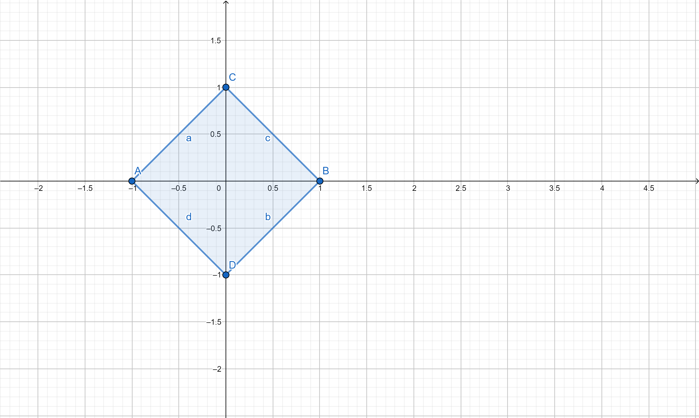

O objetivo do Mundo dos Números é ser um canal de divulgação da matemática, mais específicamente à nivel superior.
Quero apresentar conceitos relativamente avançados em matemática mas explicados de maneira simples, para que mais gente se encante com a Rainha das Ciências.
Teoria de grupos
Um grupo é um conjunto \(G\) munido de uma operação \(\circ: G \times G \to G\) tal que:
i)Para todo \(g,h, k \in G\) temos \(g\circ(h \circ k) = (g \circ h)\circ k\) (Associatividade)
ii)Existe um elemento \(e \in G\) tal que \(g \circ e = e \circ g = g\) para todo \(g \in G\).
iii)Para cada \(g \in G\) existe um elemento \(g^{-1} \in G\) tal que \(g \circ g^{-1} = g^{-1} \circ g = e\)
Se, além disso, \(g \circ h = h \circ g\) para todo \(h \in G\) então o grupo é dito abeliano.
Espaços topológicos
A reta
O conjunto dos números reais \(\mathbb{R}\) com a operação de soma é um grupo (abeliano). Este é um exemplo de grupo de ordem infinita, ou seja, tem infinitos elementos.
Escrevemos, assim \(|G| = \infty\).
Outro conjunto numérico que é um grupo é o conjunto dos números complexos sem o zero \(\mathbb{C}^{*}\) com a operação de produto. Escrevemos
\((\mathbb{C}^{*}, .)\) para denotar o grupo munido da operação.
As raízes da Unidade
Vamos dar agora um exemplo de um grupo finito. Fixe um \(n \in \mathbb{N}\). Uma raiz n-ésima da unidade é um número \(z \in \mathbb{C}\) tal que \(z^n = 0\).
Temos que o conjunto de todas as raízes da unidade é um grupo (com a operação de produto de números complexos). E o mais legal vêm agora: esses números tem uma forma especial. Eles são da forma
$$z_k = e^{\frac{2k\pi i}{n}}$$ com \(k = 0, \ldots, n-1\). Ou seja, o conjunto das raízes n- ésimas da unidade é:
$$\{e^{\frac{2k\pi i}{n}}| k = 0, \ldots, n-1\}$$. Quer mais ? Os elementos desse grupo formar um polígono no plano complexo. Por exemplo, para \(n = 4\) temos a seguinte representação:

Espaços topológicos
Espaços topológicos são conjuntos munidos de uma estrutura que chamamos de Topologia.
Basicamente é a estrutura que define o conceito de continuidade e aonde você pode calcular, por exemplo, calcular expressões do tipo
\[\lim_{x \to \infty} e^{\cos(x^2)+1}\].
Para formalizar essa ideia é preciso um pouco de trabalho. Por isso daremos algumas definições relâmpago
Uma topologia para um conjunto \(X\) é uma coleção \(\tau\) de subconjuntos de \(X\), chamados de abertos, tais que:
i)\(\emptyset\) e \(X\) \(\in \tau\)
ii)Se uma coleção qualquer de conjuntos \(\{U_{\lambda}\}_{\lambda \in L} \in \tau\) para todo \(\lambda \in L\) então \(\bigcup_{\lambda \in \lambda} U_{\lambda} \in \tau\)
iii)Se uma coleção finita de conjuntos \(\ \{U_n\}_{n \in M} \in \tau\) para todo \(n \in M\) então \(\bigcap_{n \in M} U_{n} \in \tau\)
Os conjuntos de \(\tau\) são chamados de Abertos. Um espaço topológico é um conjunto munido de uma topologia
Exemplos legais de Espaços topológicos
Novamente, a reta
A topologia neste caso é a coleção de todos os intervalos abertos. Um intervalo aberto é um conjunto da forma \((a,b)= \{x \in \mathbb{R}| a \le x \le b\}\). Por exemplo, o intervalo \((0,1)\) (o intervalo mais importante de matemática, diga-se de passagem) é o conjunto de todos os números reais maiores que zero e menores que 1.